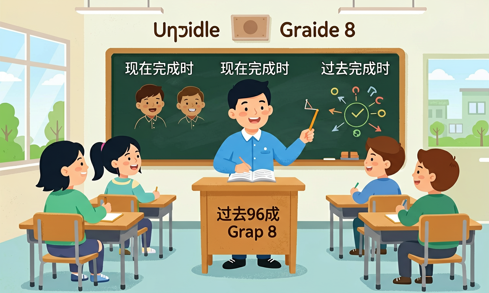

就语法知识而言，要帮助学生建立以语言运用为导向的“形式—意义—使用”语法观，引导学生在理解主题意义的基础上，认识到语法形式的选择取决于具体语境。

🎯 能说出现在完成时与过去完成时的基本结构
🎯 能判断句子中动作发生的先后顺序
🎯 能分析具体语境中两种时态的使用差异
❓ 为什么现在完成时老要加have/has？不加行不行？
❓ 过去完成时为啥非得有个'过去的过去'？直接说过去不行吗？
❓ 考试总混用这两个时态怎么办？
学完这一课，这些问题你都能自信地回答。
哪个句子使用现在完成时？
过去完成时的动作发生在？
现在完成时与过去完成时是初中英语的重要内容。就语法知识而言，要帮助学生建立以语言运用为导向的“形式—意义—使用”语法观，引导学生在理解主题意义的基础上，认识到语法形式的选择取决于具体语境。
重视在语境中呈现新的语法知识，指导学生在语境中观察和归纳所学语法的使用场合、表达形式、基本意义、使用规则和语用功能。
把卡片拖到核心概念 / 方法技能 / 应用情境 / 常见误区。
拖完 4 项后自动判分。
现在完成时 have/has + 过去分词，表过去发生对现在仍有影响，或从过去持续到现在；过去完成时 had + 过去分词，表“过去的过去”。注意 for/since 与非延续动词的限制。
already/yet/ever/never/since/for 常提示现在完成；by the time + 一般过去，主句常用过去完成。
常见误区：常见误区是 have gone to / have been to 混淆，或非延续动词与 for 一段时间误用。
since 2020 的句子常用？
现在完成时=have/has+过去分词；过去完成时=had+过去分词
现在完成时强调现在的结果或经历；过去完成时强调过去某时间前的动作
现在完成时锚点是现在；过去完成时锚点是过去的某个时间点
现在完成时常见于经验陈述（如I have been to...）；过去完成时多用于故事倒叙
写日记用现在完成时记录成果；写小说用过去完成时补充背景
复制提示词到 AI 学伴，生成「现在完成时与过去完成时」的mind map or summary table；也可以上传你手绘的示意图，请 AI 学伴点评。
复制后可粘贴到 AI 学伴继续对话。
下列哪个句子使用了正确的时态？
请找出五个使用现在完成时和过去完成时的句子，并分析它们的使用场景
关于现在完成时与过去完成时的学习，哪种做法最科学？
选一个并查看反馈。
先独立作答，再点选项查看对错与错因。
下列句子中，哪一句使用了正确的时态？
选择正确的时态填空：'当我到达车站时，火车____（离开）。'
下列句子中，哪一句使用了错误的时态？
填空：'当我到达电影院时，电影____（开始）。'
答案：已经开始
过去完成时表示动作在过去某一时间之前已经完成
填空：'我已经____（完成）作业，当我妈妈回家。'
答案：完成了
现在完成时表示动作发生在过去但对现在有影响
✅ 现在完成时常用since/for；过去完成时常见by/before+过去时间
💡 未掌握时态的时间锚点
✅ 现在完成时主语第三人称用has；过去完成时所有人称都用had
💡 机械记忆导致混淆
口诀：现在完成have/has加，过去完成had不差，时间锚点是关键，别忘分词尾巴
类比：现在完成时像购物车（当前状态），过去完成时像快递记录（历史轨迹）
By 2020, he ___ (work) here for 10 years. 正确形式是？
迁移题：如果描述'吃早饭前已完成作业'，应说：
真题：When I arrived, the train ___ (leave). 正确形式是？
点击节点跳转到对应章节；可切换布局。